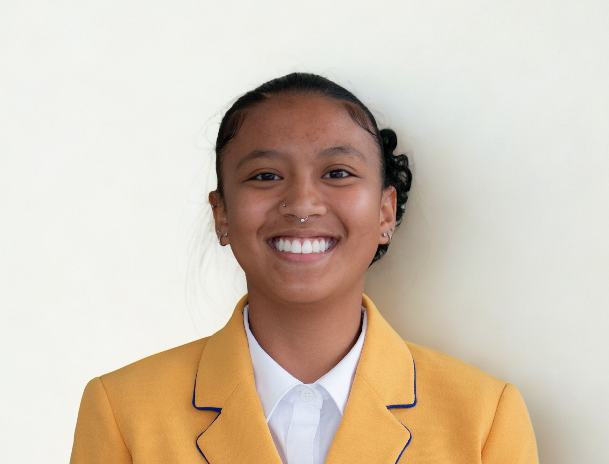
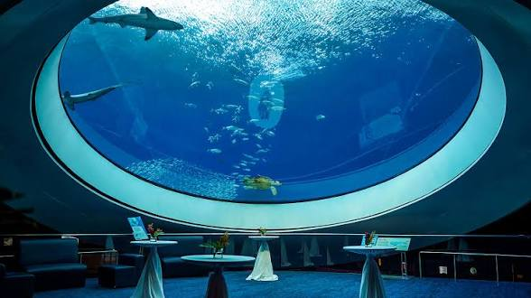
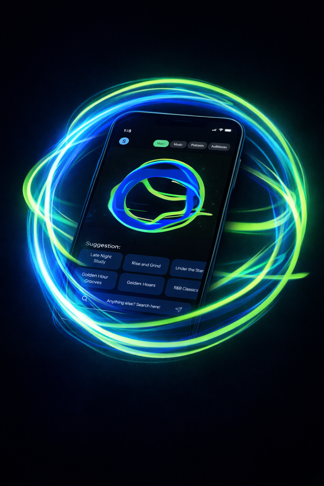
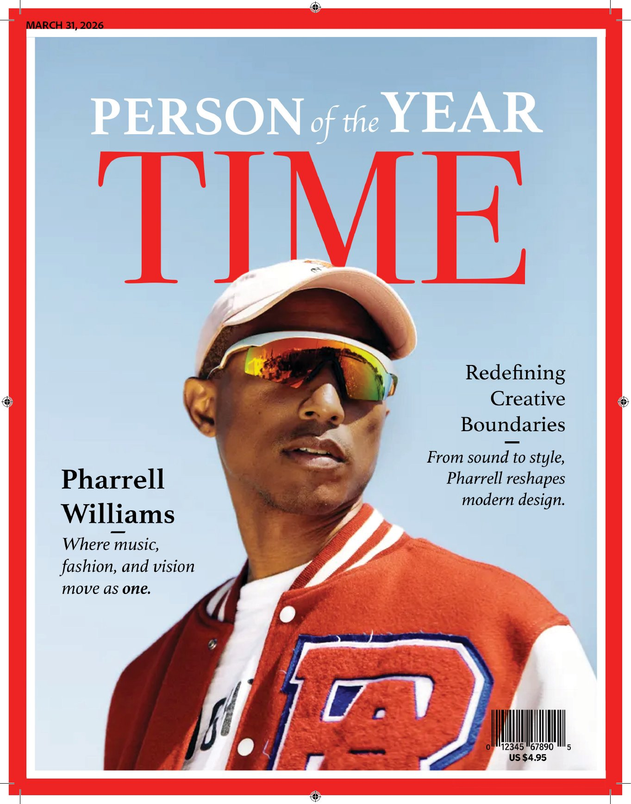

Hi, I’m Shania.
I’m a University of Miami Innovation, Technology, and Design student creating polished digital experiences across UX/UI, immersive media, and creative technology. My work sits at the intersection of clarity, storytelling, and interaction design.

Current Focus
Designing experiences that blend interface design, emerging tech, and real-world impact.
Interests
XR/VR, AI, fashion, design systems, wellness-centered experiences, and storytelling.
About
Design Perspective
I approach design through usability, visual clarity, and emotion, aiming to create experiences that feel thoughtful and memorable.
Technical Range
My toolkit spans interface design, prototyping, immersive technology, creative direction, and collaborative problem-solving.
Experience
I’ve worked across student services, immersive learning environments, brand storytelling, and interactive healthcare training.
Goal
I want to build human-centered digital products and experiences that merge innovation with a strong visual voice.
Selected Work

Miami MoCAAD Virtual Museum
Immersive XR exhibition expanding access to African Diaspora art beyond the physical museum.
View case study →
Frost Science Sensory AR/VR Experience
Sensory-friendly immersive learning designed for neurodivergent children.
View case study →
Spotify AI DJ Personalization
A music-first AI DJ concept built to improve discovery and restore personalization.
View case study →
UM Campus Cats Social Media
I designed a content strategy and interactive experience to increase engagement and awareness.
View case study →
Pharrell Williams TIME Magazine
Magazine editorial exploring music, fashion, and cultural impact through layout, typography, and storytelling.
View case study →
Miami MoCAAD Virtual Museum
Immersive XR exhibition expanding access to African Diaspora art beyond the physical museum.
View case study →Frost Science Sensory AR/VR Experience
Sensory-friendly immersive learning designed for neurodivergent children.
View case study →Spotify AI DJ Personalization
A music-first AI DJ concept built to improve discovery and restore personalization.
View case study →
UM Campus Cats Social Media
I designed a content strategy and interactive experience to increase engagement and awareness.
View case study →Pharrell Williams TIME Magazine
Magazine editorial exploring music, fashion, and cultural impact through layout, typography, and storytelling.
View case study →Resume
Contact
Phone
614-607-2900Education
University of Miami • B.S. Innovation, Technology, Design • May 2027